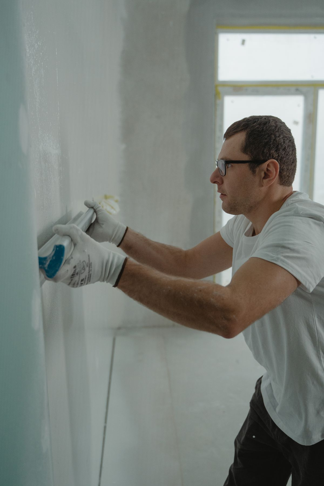

01
Hanging
New walls and ceilings, set out so joints land where they should — off the corners of openings, staggered, and as few butt joints as the room allows.
Hanging, taping and finishing across Orlando. A wall is finished when light rakes across it and shows you nothing — no ridge at the joint, no shadow at the screw, no wave down the plane. Eight reviews, eight five-star ratings.
Light like this is the only inspection that matters. It is also the reason a wall that looked perfect at midday can look wrong at six o'clock.
5.0
Google rating
8
Reviews
0
Below five stars
32839
Orlando, Florida
The detail
Two sheets of board meet in a shallow recess. Tape is bedded into it, then compound goes on in coats that get wider and thinner until the ridge disappears into the wall. Drawn flat, none of it would be visible — so the vertical scale below is exaggerated twenty times, the way a real detail drawing does it.
What we do
Four stages, and the last two are where the money and the patience go. Anyone can hang board.
01
New walls and ceilings, set out so joints land where they should — off the corners of openings, staggered, and as few butt joints as the room allows.
02
Tape bedded, then coats built and feathered wide. This is the stage that decides whether the wall disappears or announces itself.
03
Holes, cracks, failed corner bead, old patches that were never feathered far enough. Matched into the surrounding texture so the repair is not the new feature.
04
One customer wrote that their home "looks like a brand new house". That is the scale of job this is — not a single wall, a whole interior brought back.
Service list to be confirmed with the shop before launch. Google lists us as a drywall contractor; the reviews describe whole-home work.
Finish levels
Drywall finishing has six defined levels, 0 through 5. Most quotes do not mention one, and most disputes come from the customer expecting a higher level than the price covered. Here is the scale, so you can ask.
Board hung, nothing taped. A temporary condition, or a wall that is coming down again.
Tape set in compound. Ridges and tool marks acceptable. Used above ceilings and in concealed spaces.
Skim over tape and fasteners. The substrate for tile, not a surface you paint.
Free of tool marks and ridges. Suited to heavy texture, never to a flat sheen.
Joints and fasteners covered in three passes, feathered wide, sanded smooth. What most homes get and what most homes need: flat paint, light texture, wallpaper.
A thin skim across the entire surface, not just the joints, so the whole plane shares one texture. What you want under gloss, enamel, deep colour, or any wall that takes raking light or grazing downlights.
Levels 0–5 as defined by the industry finishing standard. Ask us which level a quote covers — and if the answer is vague anywhere, that is worth knowing.

What people say
“The quality of work and their attention to detail was amazing.”
Google review
“You're going to get an amazing job done at a great price !”
Google review
“My family considers him a friend after all he has done for us.”
Google review
Next step
A room, a whole interior, or one patch that three people have already tried to fix. Call and describe it.